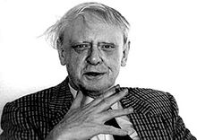

Friday, January the 18th, 2013
back to: title, date or indexes
Over at The Dabbler today, a bonus extra diary entry, for this day nineteen years ago, written by a nonagenarian Russian exile in Spain. Anthony Burgess is mentioned in the text, which gives me an excuse to remind you lot of his biographer Roger Lewis' matchless description of the Mancunian polymath's hair:
And how are we going to describe his hair? The yellowish-white powdery strands were coiled on his scalp like Bram Stoker's Dracula's peruke, not maintained since Prince Vlad the Impaler fought off the Turks in the Carpathian mountains in 1462. What does it say about a man that he could go around like that, as Burgess did? Though he was a king of the comb-over (did the clumps and fronds emanate from his ear-hole?), no professional barber can be blamed for this. I thought to myself, he has no idea how strange he is. What did he think he looked like? He evidently operated on his own head with a pair of garden shears.
